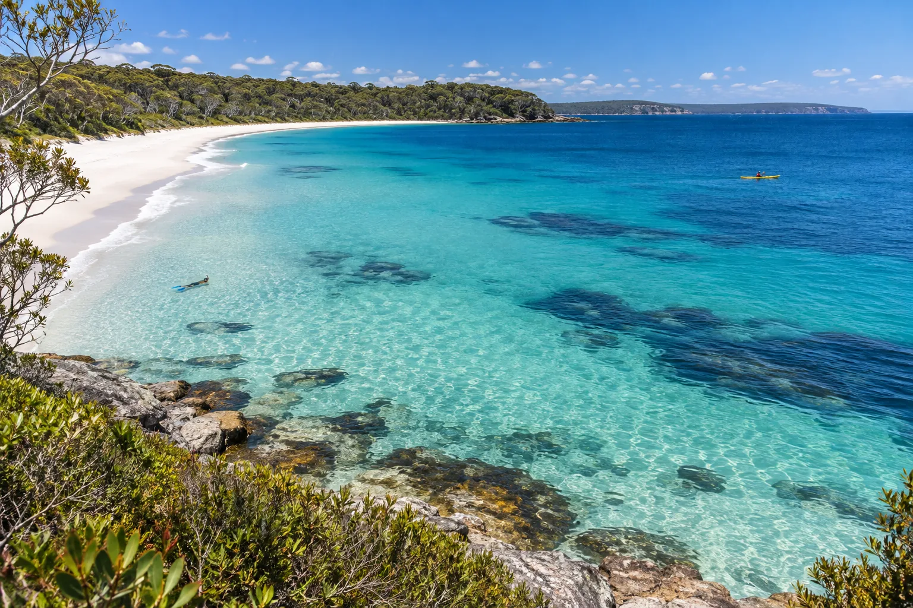

Jervis Bay
Nouvelle-Galles du Sud, Australie · snorkeling, kayak, paddle, baignade

Baie au sable le plus blanc du monde, dit-on, avec dauphins et parc marin. Eau calme et claire.
- Lieu
- Nouvelle-Galles du Sud, Australie
- Niveau
- Débutant
- Activités
- snorkeling, kayak, paddle, baignade
- Type d'eau
- Mer / océan
- Coordonnées
- -35.10, 150.75 (position approximative du secteur)
Dangers à connaître
- Requins dans la baie.
- Parc marin protégé.
Le conseil d'Ocean Buddy
Pagaye tôt : les dauphins sont souvent visibles le matin.
Ouvrir dans Ocean Buddy Télécharger sur l'App Store
Source : Fiche Ocean Buddy · septembre 2026 · à vérifier localement.